Nitto ATP Finals 2026— impatto

Stime ex ante
0:00 – 0:02
Scena 01 · Apertura Clip AI
- On-screen
- «Nitto ATP Finals 2026 — impatto», per 1 secondo · loghi fissi in basso da qui alla fine
- Visivo
- Dall’alto entra una mano che spinge la pallina gialla verso il basso. La pallina rimbalza sul pavimento, esce dall’inquadratura e torna sulla mano. La camera ruota piano attorno alla mano, mai ferma. Duotone Bluette da qui alla fine, la pallina resta gialla.
- Audio
- Primo flop sul pavimento. Il tappeto parte appena sotto, quasi muto.
- Prompt
- Seedance 2.5, 5 s, 9:16: «Close-up of a hand, palm down, pushing a yellow tennis ball toward a dark indoor court floor. The ball bounces, leaves the frame and comes back up into the hand. Slow orbiting camera, shallow depth of field, dramatic arena lighting, no logos, no faces.»